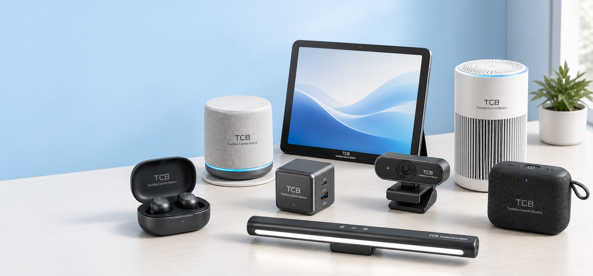

说明：这是一个独立概念电子产品品牌网站，不隶属于 Toshiba Corporation，也不是 Toshiba Canvio Basics 硬盘或存储产品线。
Basics Ecosystem
简单、稳定、每天都用得上
统一的 TCB 标识、柔和蓝白色调和简洁硬件形态，让 Basics 系列更适合家庭、学习和轻办公场景。
Featured Products
精选产品
8 款非硬盘日常电子产品，覆盖通勤、学习、会议、充电、桌面和空气管理。
About Toshiba Canvio Basics
一个专注基础体验的独立电子产品系列
Toshiba Canvio Basics 的目标不是堆叠复杂功能，而是把常用设备做得清楚、稳定、易用。每款产品都围绕低学习成本、可靠连接和干净外观展开。
8
款首发产品
TCB
统一品牌标识
0
硬盘类产品
Contact
联系品牌团队
为日常电子设备建立清晰标准
如需品牌合作、渠道洽谈或产品资料，请联系 Toshiba Canvio Basics 品牌团队。